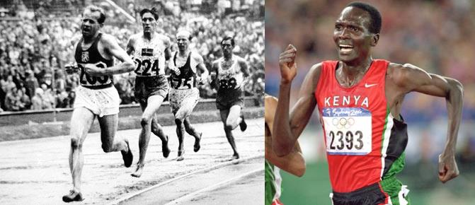
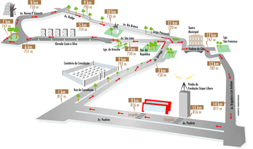
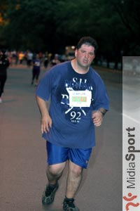
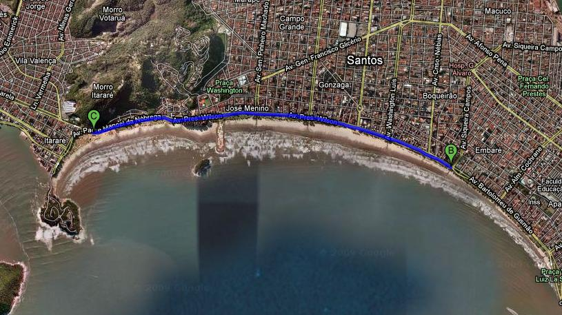
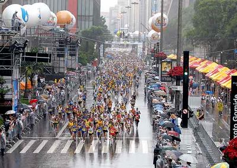

Cia. Ex-sedentário
vamo, vamo, vamo…
Estou muito ansioso pra São Silvestre, sempre que corro um prova importante isso acontece e como essa é umas das mais importantes por ser a maior competição da America do Sul e tantos atletas importantes que já passou por lá e que sou fã como Emil Zátopek, Paul Tergat e outros, já até sonhei com a competição, mas estou me segurando hoje depois do trabalho vou dar uma corridinha bem leve pra dar uma acalmada nos ânimos e dia 31/12 tirar esse nó da garganta que aparece principalmente quando estou para cruzar a linha de chegada.

Salve galera estou em contagem regressiva para a São Silvestre, nesse feriado e final de semana consegui treinar um pouco, na quarta-feira treinei quando cheguei do trabalho 9km e na quinta-feira véspera de natal treinei cedinho, neste dia iria correr somente 6km mas no meio do treino começou a me acompanhar um outro corredor e fomos conversando ao estilo Dean Karnazes, trocando experiências de corrida, o cara vai fazer a São Silvestre em 50min, corre bem o cara então imaginem como foi meu treino, foi um total de 9km em um ritmo muito bom, no natal não corri, fui treinar somente no domingo e apenas 6km e depois do almoço fui retirar meu kit pra competição o que fez aumentar minha ansiedade mas agora o jeito é esperar, é isso ai um bom natal a todos e depois da São Silvestre volto aqui pra propor um desafio, grande abraço.

Tenho eventos, treinos e muitas sensações passadas para relatar. Mas quero falar do que estou sentindo agora.
Eu iria treinar hoje, mas sequer consegui colocar o relógio para despertar, acordei assustado às 04:20 horas (um bom horário para treinar), mas o fiz de mal jeito e cheio de dores, NO SOFÁ: aquele velho companheiro do qual não estava sentindo nenhuma falta.
Decidi não treinar. Não tem sentido castigar o corpo por conta de farras e excessos.
Por um lado foi bom me lembrar mais uma vez de que por mais que eu tenha evoluído, um deslize apenas e fico refém do sofá.
Decisão tomada, dormi mais duas horas, na cama.
Vindo para o escritório, fiquei preocupado em como reagir frente as farras alimentares do Natal (que durou quatro dias, diga-se bem). Mas decidi não ficar preocupado e pensar em algo bom. Foi aí que me lembrei de que a banana que tinha comido ao acordar me fizera bem ao paladar, e que uma maça cairia muito bem, como sequência.
Então saí do Metro Trianom e desci duas quadras da Pamplona para colher as maças de minha maior predileção: no Pão de Açúcar. Para arrematar, na volta uma passadinha no MC Donald´s para pegar um balde de café.
Satisfeito com a escolha, café numa mão e sacola de maças lindas e saborosas na outra, pude então, mais tranquilo, deixar-me contagiar pela atmosfera da São Silvestre que já toma conta da Avenida Paulista. Fui tomado por uma sensação muito boa boa. Uma confiança, repleta de pensamentos bons que fazem inundar também o corpo, que, no momento certo, terá o movimento que minha cabeça acordou pedindo. No tempo certo eu o acarinharei, como sempre pregado neste nosso espaçozinho.
Trabalharei até quarta e vou me deixar impregnar de São Silvestre. E, no mesmo horário em que ela estiver acontecendo, correrei se possível, na praia, a mesma distância, tentando visualizar através do meu suor, a felicidade do Thiago Zamiht, na prova.
Sábado passado eu, Claudio, Thiago e Paula, encaramos a prova de natal da Corpore. Foram 6 km que eu encarei correndo o tempo todo (ou quase).
Foi um desafio e tanto, pois não tive uma semana legal, encarando alguns medos interiores, mas a corrida veio e revitalizou meus pensamentos. E que venha os desafios!
Desta vez a minha família estava lá. Minha mulher torcendo por mim e meus filhos vendo o papai correr. Coitados, foram na esperança de ver o “Show da Turma da Mônica” e apenas viram a Mônica mandando beijinhos e distribuindo alguns abraços. Posso dizer que isso faz a total diferença. Motiva saber que eles estarão na linha de chegada esperando a gente.
Largamos, eu, Claudio, Thiago e Paula. No primeiro quilômetro eu acompanhei quanto pode, tanto que fizemos em pouco mais de 7 minutos. Mas a partir de ai, percebi que estava puxado e falei para o Claudio que iria diminuir o rítimo. Segundo quilômetro em 8 minutos e diminuindo… Mesmo porque para chegar no terceiro quilômetro, foi necessário encarar a subida que tem após o portão do IPT. Nesta subida senti o fígado e sugeri ao Claudio para continuar o rítimo enquanto eu caminhava para recuperar, foram 200m e logo chegamos no topo e depois era descida e plano apenas… Não parei e consegui acelerar um pouco no final antes de cruzar a linha de chegada. Muito legal, muito emocionante, muito tudo.
Na chegada, o Claudio disparou e correu até a galera pegando o Henrique e o Maurício no colo. Vi que ele queria me dar o Maurício, mas no estado que estava não iria conseguir segurá-lo e ele acabou cruzando com os dois no colo. Foi bem emocionante.
Thiago e Paula, cruzaram a chegada ao tempo de 45 minutos de prova (aproximadamente).
Eu e o Claudio cruzamos com 55 minutos.
Quero mais!
Não estou postando sobre a corrida de sábado, vou deixar essa tarefa para o Claudio ou Alex.
Domingo fui para São Vicente com meus pais e a Paula, já fui pensando em fazer um treino, pois lá é muito bom, plano e o clima é muito agradável e lá foi eu saindo de São Vicente ao lado do teleférico sentido Santos até o canal 4, foram 10Km ida e volta com o tempo de 50Min.

Citarei abaixo trechos extraídos do site do amigo Fábio Namiut os quais considero a razão por que amo este esporte e quero fazer parte dele pra sempre. O Fábio já foi como nós, sedentário, gordo, estressado e, além disso, fumante.
Mesmo depois de muita melhora física, muitas corridas grandiosas e maratonas, ele, como outros corredores (daí a maravilha deste esporte), impressiona com o relato que consegue fazer de uma corrida aparentemente simples, curta e pobre (sem medalha) um evento pra lá de especial.
Bem… deixo ele falar. Que prazer me dá ler isto:
“O que é, afinal, uma corrida? Uma simples competição esportiva, para onde se vai apenas e tão somente para se alcançar um objetivo, seja ele um resultado, um recorde, um troféu, um prêmio em dinheiro, uma distância até então inédita ou mesmo uma singela medalha de participação? Uma relação formal fornecedor-cliente, onde se paga um determinado valor para receber, ao final, as mercadorias correspondentes ao montante despendido? Uma forma de motivar quem pratica o esporte, colocando à prova suas condições e seu treinamento? Um desafio, onde o adversário pode ser você mesmo, o seu velho parceiro de treinos ou aquele camarada que você nem sabe o nome, mas que vive topando por aí e te olhando com um arzinho de superioridade? Sim, tudo isso. Mas não só isso. Uma corrida é muito mais. É, sobretudo, uma celebração. Da vida, da saúde, do bem-estar. Corre, normalmente, quem está bem, quem não está, fica um tempo no gancho. E depois volta, são coisas da vida. É reunir pessoas que, mesmo das mais diferentes origens, pensam de maneira semelhante à sua, gostam das mesmas coisas que você. E se tornam seus grandes amigos sem nenhum esforço.
Esse foi o espírito com que encarei, desde antes da largada ser dada, esta prova que marca, muito provavelmente, a minha despedida da temporada 2009.
…
Correndo com meta, mas mais ainda com prazer. Querendo aproveitar aquele final de prova e de temporada para sentir, nem que fosse por alguns instantes, o gosto de correr livre, sem a bola de ferro da obsessão cega por resultados no pé. Talvez tenha até diminuído o ritmo novamente um pouco ali. Foi uma sensação breve, mas gloriosa. A de estar fazendo algo que não nasci sabendo, mas estou aprendendo, cada dia mais. E que amo verdadeiramente.
…
Pena não ter feito mais medalhas. Distribuí todas as que levei e fiquei feliz com o retorno de quem recebeu. Gente que compreende o valor de coisas como simplicidade, amizade e tradições. Aos amigos a quem presenteei, fiz questão de agradecer pela companhia, não só hoje, mas no decorrer de mais um ano cheio de saúde, alegrias… e corridas! Termino um ano de altos e baixos, como são quase todos os anos, de cabeça erguida para os novos desafios que, se Deus quiser, virão, na corrida e fora dela. Como disse aos Fabios Matheus e Vilhena, que me receberam logo após a chegada; ao Luis Carlos, que me acompanhou na retirada do kit (maçã, duas bananas e água à vontade) e a alguns outros amigos depois, a sensação pós-prova era estranha, uma vontade de continuar correndo.
…
Finalizando, quero falar da satisfação que foi ser cumprimentado por várias pessoas que vieram conversar comigo, dizendo que são visitantes assíduos do site. Muito bacana saber que os relatos que faço sobre as corridas, além de me darem a satisfação de escrever, também servem para ajudar as pessoas, compartilhando informações e opiniões, auxiliando na divulgação dos eventos, criticando construtivamente, elogiando quem merece, enfim, sendo um espaço onde o corredor tem voz. Não só este que vos escreve, mas todos os que frequentam o Arquivo de Corridas (e o CorridasDeRua.com, que reproduz os textos na seção “A Visão do Corredor”). Obrigado a todos, sejam sempre muito bem-vindos. E continuem me ajudando a fazer este trabalho, que é de formiguinha, mas está, na medida do possível, ajudando, junto com os bons organizadores, a melhorar as nossas corridas de rua.”
Fábio, você pode afirmar que todos que correm são especiais. Mas todos os corredores têm a agradecer sua especial atenção, cuidado e demonstração do quanto isto tudo é importante. O agradecimento é por você conseguir abraçar tanto com apenas dois braços.
Sinta-SE enormemente abraçado, AMIGO FÁBIO.
Ação como está tem de ser divulgada. Além do que, o Carlos Dias é uma figura super bacana. Amigos de todos (e também dos futuros ex-sedentários). Ainda não sei o horário, mas eu irei.

Carlos Dias correndo “24 horas” contra o câncer infantil
Abaixo teor do que pode ser visto na íntegra no blog http://ultramaratonistacd.wordpress.com/
Nesse final de semana dias 19 e 20 de dezembro estarei correndo 24 horas na esteira na Academia ECOFIT a única academia ecológica do Brasil, essa ação mais uma vez será para divulgar e arrecadar fundos para o Graacc Grupo de apoio ao adolescente e criança com câncer.
E também será uma grande oportunidade para quem quiser comprar quilometros e ajudar no combate ao câncer infantil, eu estarei fazendo o que mais gosto de fazer que é correr, meu patrocinador a Crocs já comprou 50 km o WH SPA também já comprou 50km você também pode comprar quilometros. Pretendo correr 100km mas sua presença poderá aumentar esse número.
Aproveito para convidar todos amigos para visitarem a academia no periodo que estarei correndo para bater um papo e tirarmos uma foto juntos, a largada será as 10 hs do sabado dia 19 e o final será as 10 horas de domingo dia 20 de dezembro.
O endereço da academia é Rua Cerro Corá, 580 – Alto de Pinheiros – São Paulo próximo estaçao vila madalena
Vamos fazer parte dessa atitude combater e vencer o câncer infantil é um desafio que devemos enfrentar juntos.
Abraços
Carlos Dias
Doze dias sem treinar. O retrocesso de um furo no cinto e pesadelos com a possibilidade da volta da apnéia que me afligia até agosto. E estress em cima de estress. Aliás, eu nem deveria estar postando neste horário. Mas não resisti. Isto é importante.
Intereressante demais esse apoio e incentivo mútuo que acontece aqui. Fiquei tão feliz com a notícia do Thiago que parecia até que eu tinha ganhado a oportunidade de ir naquela festança. Caiu de uma forma tão positiva que nem me estressei com os acontecimentos do resto do dia.
Por causa da chuva, fiquei das 19:00 às 22:00 na plataforma do trem, na Barra Funda. Isso teria me deixado alucinado. O que que não aconteceu. Comprei a contra relógio de dezembro e a li inteira. Com direito a releitura da matéria dos pulinhos.
Cheguei em casa às 23:40. E 10 minutos depois saí com o meu fiel amigo Bento para a Rua. Estou completamente sem relógio (o único era o do celular que foi furtado de dentro do carro). A notícia tinha me afetado de uma tal maneira, que nem me lembrava do peso extra, dos dias sem treino e do estress dos últimos dias. E a minha postura, acredito que nunca tinha sido tão eficiente. Até arrisquei a treinar rampas, mas desisti na terceria vez que “ramparia”. Disse pra mim mesmo: Relaxe, curta o passeio, a companhia e sossego da madrugada. Por Deus, como foi gostoso. Quem engordou? Não treinei? Nem me lembro deste detalhe. O que importa é que a minha gana voltou com tudo. Estou com plano de “puxar ferro” durante os próximos trinta dias. Com isso reforço a estrutura e ainda compenso as invevitáveis comilanças das festas fazendo um supino e uma rosca direta. A corrida pra mim agora é sagrada. Não pode ser usada para compensar deslizes. Fazer isso é algo que se não trás lesão, trás fadiga psicológica da atividade e nenhum ganho em performance. Isto é Claudião procurando fazer dos erros, acertos, Gente!. Aplausos por favor.
De volta a casa. O treino não acabou. Fui para o gramadinho (recém aparado) tentar executar os pulinhos sobre os quais tinha lido na revista. O nome é pomposo: pliometria. Explicações cientificas detalhadas, mas na verdade mesmo, aquilo foi desenvolvido e aperfeiçoado no centro de treinamento do São Paulo Futebol Clube. Saltinhos como aqueles, fazer corretamente. Sei… Só mesmo um Bambi. Mas deixemos essas porcarias para lá. Que isso?! Ainda bem que ninguém viu e que o Bento não fala. Um fiasco completo. Eram quatro tipos de saltitos, executei mal e porcamente duas vezes uma séria de cada, com 10 repetições. Quando o Alekão estiver junto, pedirei para filmar, para que eu possa, ou desistir, ou tentar aperfeiçoar. Façam suas apostas. Mas ainda que eu faça muito bem, continuarei sendo Corinthiano.
Para terminar, três séries de agachamento livre, de 10 repetições cada. Esqueci de dizer que antes de sair para “correr” (aquilo é trote, Mano, e dos vagaba!) eu fiz três séries de flexões de braço (ou apoio, como alguns chamam. Apoio para mim é: “Thiago, estou com dor nas costas, o quê que eu faço, pelo amor de Deus?!, como fiz uns tempos atrás). Voltando aos exercícios, as duas primeiras séries foram de 20 repetições e a última de 30. Isto mesmo galera! A minha estratégia de só fazê-lo (o apoio) de 72 em 72 horas, está surtindo efeito. Não tem nenhuma competição de “apoio” por aí não? Estou mais apto para isso do que para correr. Mas correr é “a atividade física que eu adoro” (Alekão, como eu linco para para os conselhos do Dean?!)
Entrei dentro de casa eram 01:15 Horas. Com a endorfina a mil, não conseguia dormir. Aliás, não dormi quase nada mesmo. Tenho um monte de tarefa atrasada, MAS ESTOU FELIZ DA VIDA. E viva a NOSSA equipe. Viva o esporte. Viva a solidariedade e companheirismo entre os Corredores. Viva o São Paulo. Êpa! Serão os pulinhos?
É isso. Sábado eu sorrirei bastante. Enquanto o Thiago correrá feito doido pra lá e pra cá, para pegar nossos melhores e mais gordurosos ângulos na Corrida de Natal. As camisetas são bonitinas. Não vejo a hora.
Em tempo: Thiago. Aproveite a festa. Vc tem todo o direito de ir focado no alcance de um bom tempo, em comemoração ao seu empenho em meios as atribuições que nos tiram da atividade física.
Mas caso desencane do relógio, lembre-se de mim e em voz alta cante “Adeus ano velho…” na subida da Brigadeiro. Falou?
Fala galera, hoje estou muito feliz, mas depois eu conto, os treinos estão muito bons, terça rodei 6km bem tranqüilo já hoje foi mais puxado mas conseguindo treinar apenas 8km por causa do tempo curto mas em ritmo forte, esta bom estou feliz assim agora vem a grande noticia, tem uma vizinha colega de anos também corredora, ela trabalha na rede globo e sempre consegue algumas inscrições pra São Silvestre e não é que ela conseguiu uma pra mim 😀 poxa estou muito feliz, recebi o e-mail hoje e vim correndo contar, então é isso pessoal dia 31/12 estarei lá no meio de todo aquele povo fazendo muita festa, um grande abraço a todos.

Hoje acordei bem animado e cheio de disposição seria um ótimo dia para um treino mais longo e lá eu fui foram dez volta de 1 km cada totalizando os 10 km no tempo de 48min e 51seg um ritmo bom sem oscilação, sempre na mesma passada o que é bom, não é legal em um treino desses ficar alternando o ritmo agora se conseguir manter os treinos com mais frequência vou começar a aumentar as distancias nos finais de semana, bom é isso 😀

Nós somos 100 Juízo
Nós somos Baleias
.jpg "DSC01705 (1024x576)")
.jpg "DSC01853 (1024x576)")
.jpg "DSC01883 (1024x576)")

.jpg "IMG_7312 (1024x768)")
{kind=link}
{kind=link}
{kind=link}
{kind=link}
{kind=link}
Últimos comentários